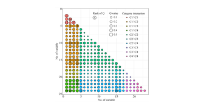
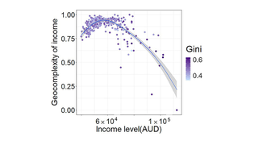
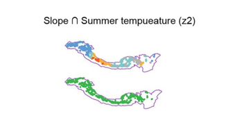
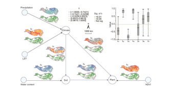
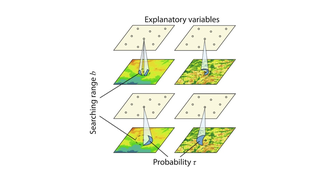
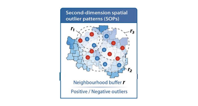
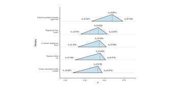
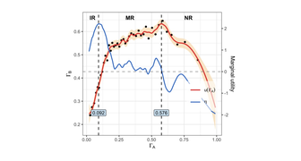
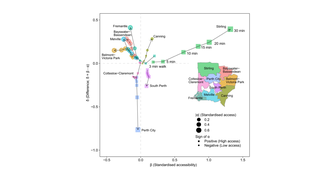

Geospatial Theories and Methods
44 innovative methods across 25 research themes · 12 open-source R packages · 260,000+ downloads
Members

Yongze Song
Supervisor
Yongze Song
Associate Professor
Curtin University
Email: yongze.song@curtin.edu.au
Homepage: yongzesong.com
Australian Young Tall Poppy Science Award winner
Fellow of Royal Geographical Society (UK)
Fellow of Harvard Spatial Data Lab (US)
Fellow of DAAD AInet (Germany)
Special Issue Editor (SIE) & Associate Editor – International Journal of Applied Earth Observation and Geoinformation
Associate Editor – GIScience & Remote Sensing
Special Issue Editor (SIE) – Geomatica
Editor – Geoscientific Model Development
Associate Editor – All Earth
Editor – Journal of Spatial Science
Curtin University
Email: yongze.song@curtin.edu.au
Homepage: yongzesong.com
Australian Young Tall Poppy Science Award winner
Fellow of Royal Geographical Society (UK)
Fellow of Harvard Spatial Data Lab (US)
Fellow of DAAD AInet (Germany)
Special Issue Editor (SIE) & Associate Editor – International Journal of Applied Earth Observation and Geoinformation
Associate Editor – GIScience & Remote Sensing
Special Issue Editor (SIE) – Geomatica
Editor – Geoscientific Model Development
Associate Editor – All Earth
Editor – Journal of Spatial Science

Zehua Zhang
RID · HSA · RGD · GIGNN · LPI
Zehua Zhang
Postdoc Researcher
Curtin University
PhD: Curtin University (Chancellor's Commendation Award)
Master: University of Melbourne (with Distinction)
Email: Zehua.Zhang@curtin.edu.au
Homepage: ResearchGate
Curtin University
PhD: Curtin University (Chancellor's Commendation Award)
Master: University of Melbourne (with Distinction)
Email: Zehua.Zhang@curtin.edu.au
Homepage: ResearchGate
- Robust Interaction Detector (RID). Spatial Statistics. Highly Cited Paper.
- Heterogeneous spatial autocorrelation (HSA). Int. J. Geogr. Inf. Sci. (Top 4 Most Read Article, 2025) R Code for HSA model
- Geocomplexity explains spatial errors. Int. J. Geogr. Inf. Sci. (Top 30 Most Cited, 2025; Top 1 Most Read, 2023) R package "geocomplexity"
- Robust geographical detector (RGD). Int. J. Appl. Earth Obs. Geoinf. Python Code for RGD model
- Geographically informed graph neural network (GIGNN). Spatial Statistics.
- Local effects of pattern interaction (LPI). Int. J. Appl. Earth Obs. Geoinf.

Peng Luo
GHM · GOZH · GPI · LESH · STUH · FFRK
Peng Luo
Assistant Professor
University of Iowa & MIT
PhD: Technical University of Munich
Master: Peking University
Email: peng-luo@uiowa.edu
Homepage: peng-luo.com
University of Iowa & MIT
PhD: Technical University of Munich
Master: Peking University
Email: peng-luo@uiowa.edu
Homepage: peng-luo.com
- Generalized Heterogeneity Model (GHM). Int. J. Geogr. Inf. Sci. (Top 4 Most Cited, 2025; Top 10 Most Read, 2024)
- Geocomplexity explains spatial errors. Int. J. Geogr. Inf. Sci. (Top 30 Most Cited, 2025; Top 1 Most Read, 2023)
- Geographically Optimal Zones-based Heterogeneity (GOZH). ISPRS J. Photogramm. Remote Sens. R Code for GOZH model: Code 1; Code 2
- Geographical Pattern Interaction (GPI). Int. J. Geogr. Inf. Sci. (Top 1 Most Read, 2025)
- Locally explained heterogeneity model. Int. J. Digital Earth. R Code for LESH model
- Spatio-temporal unmixing with heterogeneity (STUH). Int. J. Appl. Earth Obs. Geoinf.
- Focal-Feature Regression Kriging (FFRK). Geographical Analysis.

Pengcheng Zhang
DSTGN · GMS · DG · SPOCA
Pengcheng Zhang
PhD Researcher: The Hong Kong Polytechnic University
Email: zpcscholar@gmail.com
Email: zpcscholar@gmail.com

Yang Li
GPI · LESH
Yang Li
Postdoc Researcher:
Beihang University
PhD: Beijing Normal University
Email: isliyang@buaa.edu.cn
Homepage: ResearchGate
Beihang University
PhD: Beijing Normal University
Email: isliyang@buaa.edu.cn
Homepage: ResearchGate

Jiao Hu
LISP · LPA · LPI
Jiao Hu
Research Associate:
Curtin University
PhD: Chengdu University of Technology
Email: jiao.hu@curtin.edu.au
Homepage: ResearchGate
Curtin University
PhD: Chengdu University of Technology
Email: jiao.hu@curtin.edu.au
Homepage: ResearchGate

Rui Qu
LPA
Rui Qu
Research Associate:
Curtin University
PhD: Chengdu University of Technology
Email: rui.qu@curtin.edu.au
Curtin University
PhD: Chengdu University of Technology
Email: rui.qu@curtin.edu.au

Xinyue Yang
Anisotropy
Xinyue Yang

Kai Ren
SOH · SDO · Anisotropy
Kai Ren

Haiyang Liu
DSI · LPI · DG · PSL
Haiyang Liu
PhD Researcher:
Hokkaido University, Japan
Email: haiyang.liu.q6@elms.hokudai.ac.jp
Homepage: kevinoceanliu.github.io
Hokkaido University, Japan
Email: haiyang.liu.q6@elms.hokudai.ac.jp
Homepage: kevinoceanliu.github.io

Lai Chen
ST-MST
Lai Chen

Wenbo Lyu
GCMC · tEDM · gdverse

Yilong Wu
FFRK · ESDA
TUTORIALS
Tutorials for Reproducing Models

OPGDOptimal Parameters-based Geographical Detector
Open tutorial →

GCGeocomplexity Explains Spatial Errors
Open tutorial →

LPILocal Pattern Interaction
Open tutorial →

LPALocal Pathways of Association
Open tutorial →

SDASecond Dimension of Spatial Association
Open tutorial →

SOHSpatial Outliers Explains Heterogeneity
Open tutorial →

DSIDegree of Spatial Interpretability
Open tutorial →

STORSpatial Trade-Off Relation
Open tutorial →

SDMSpatial Delta Model for Accessibility
Open tutorial →
PART I
Spatial Prediction via Spatial Feature Modelling
1. Spatial validation
2. Spatial association
3. Spatial outliers
4. Spatial autocorrelation
5. Geostatistics & kriging
🏆 Highly Cited Paper (Top 1%)
6. Geocomplexity
7. Geographical similarity
8. Spatial singularity
9. Spatial graph network
10. Spatial fusion
11. Spatial transformer
12. Generalized heterogeneity
PART II
Spatial Heterogeneity and Driver Analysis
13. Spatial heterogeneity
🏆 Highly Cited Paper (Top 1%)No.1 Most Cited in History
Top 2 Most Read 2026
14. Robust spatial models
15. Spatial interaction
16. Causal discovery
17. Spatial anisotropy
18. Spatial path analysis
19. Spatial segmentation
20. Spatial unmixing
PART III
Spatial Urban Methods: Patterns, Accessibility, and Decisions
21. Spatial accessibility
22. Spatial trade-off
23. Spatial boundary
24. Spatial decision-making
25. Spatial optimization
Important Concepts in Geospatial Analysis
- Spatial validation: degree of spatial interpretability, degree of geocomplexity
- Spatial association: second-dimension spatial association, explainable second-dimension spatial association
- Spatial outliers: second-dimension outliers, second-dimension outlier-driven heterogeneity, local outliers for context-aware prediction
- Spatial autocorrelation: heterogeneous spatial autocorrelation
- Geostatistics or kriging: segment-based regression kriging, focal-feature regression kriging
- Geocomplexity: geocomplexity
- Geographical similarity: geographically optimal similarity, pattern similarity learning
- Spatial singularity: singularity regression kriging
- Spatial graph network: geographically informed graph neural network, dynamic spatiotemporal graph network
- Spatial fusion: spatial context-aware fusion
- Spatial transformer: spatiotemporal multiscale transformer
- Generalized heterogeneity: generalized heterogeneity
- Spatial heterogeneity: spatial stratified heterogeneity, local stratified heterogeneity, geographically optimal zones-based heterogeneity, locally explained heterogeneity, spatial stratified heterogeneity family, wavelet geographically weighted regression
- Robust spatial models: robust geographical detector
- Spatial interaction: robust interaction detector, interactive detector for spatial association, geographical pattern interaction, local effects of pattern interaction
- Causal discovery: temporal empirical dynamic modeling, geographical cross mapping cardinality
- Spatial anisotropy: spatial irregular anisotropy
- Spatial path analysis: local pathways of association
- Spatial segmentation: spatial heterogeneity-based segmentation, gaussian mixture segmentation
- Spatial unmixing: spatio-temporal unmixing with heterogeneity
- Spatial accessibility: D2SFCA spatiotemporal accessibility
- Spatial trade-off: spatial trade-off relation, dynamic trade-off, spatial delta model
- Spatial boundary: spatial big data-based city redefinition
- Spatial decision-making: MFSD spatial decision making
- Spatial optimization: spatiotemporal particle swarm optimization for cost allocation
- Advanced geographical detector models: Optimal Parameters-based Geographical Detector (OPGD), Robust Interaction Detector (RID), Local Indicator of Stratified Power (LISP), Geographically Optimal Zones-based Heterogeneity (GOZH), Geographical Pattern Interaction (GPI), Interactive Detector for Spatial Associations (IDSA), Robust Geographical Detector (RGD), Locally Explained Heterogeneity model (LESH), Generalized Heterogeneity Model (GHM), Heterogeneous Spatial Autocorrelation (HSA)
Open-Source Geospatial Software (260,000+ downloads)
Optimal Parameters-based Geographical Detectors (OPGD) for spatial factor exploration. R package "GD" | publication
– Highly Cited Paper · No. 1 Most Cited Article in GIScience & Remote Sensing in 2021–2023
Geographically Optimal Similarity (GOS) for spatial prediction. R package "geosimilarity" | publication
Second-Dimension Spatial Association (SDA) for spatial prediction. R package "SecDim" | publication
Geocomplexity. R package "geocomplexity" | publication
Interactive Detector for Spatial Association (IDSA) for spatial factor exploration. R package "IDSA" | publication
– No. 2 Most Cited Article in IJGIS in 2021–2023
Homogenous Segmentation (HS) for segmenting spatial lines data. R package "HS" | publication
Energy Decomposition Analysis (EDA) for analysing carbon emission factors. R package "EDA" | publication
SDGdetector: Detecting Sustainable Development Goals (SDGs) in Text. R package "SDGdetector" | publication
gdverse: Analysis of Spatial Stratified Heterogeneity. R package "gdverse" | publication
localsp: Local Indicator of Stratified Power. R package "localsp" | publication
cisp: A Correlation Indicator Based on Spatial Patterns. R package "cisp" | publication